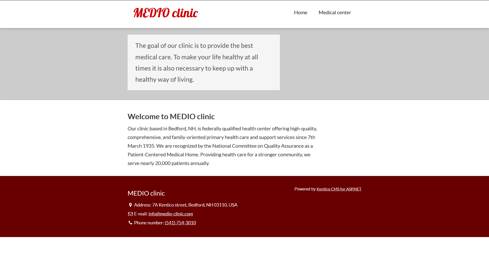
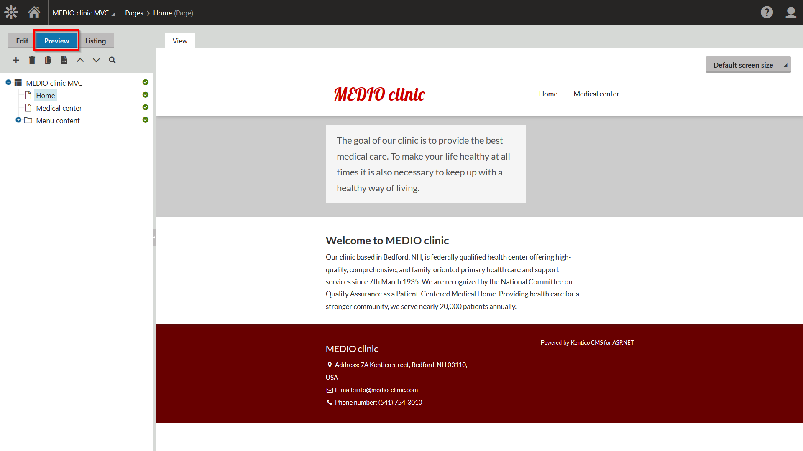

Displaying the content of the pages
This page is a part of a tutorial, which you should follow sequentially, from the beginning to the end. Go to the first page: Getting started with Kentico.
In the previous step of the tutorial, you have created the basic layout and added styling for your website. In this step, you will finally see what the content stored in Kentico looks like on the live site. You now need to roll up your sleeves and write the code of your MVC application.
You will learn about:
Retrieving content of pages on MVC sites
The dynamic content of your website's pages is created and maintained in the Kentico administration interface, and stored within the database that is shared with your MVC application. To display the data on the live site, you need to write code that retrieves the data, prepare controllers that handle the appropriate URL routes, and create views that format the data into the required HTML output.
We recommend using the strongly-typed classes that you generated for your page types to retrieve page content. In this tutorial, we will use the generated provider to retrieve the latest published versions of pages. However, on more advanced websites, you can also retrieve the current edited version of pages under workflow (before they are published to the live site), and use the data for the content displayed in preview mode. This helps website editors see what their edits look like before publishing.
Well-crafted MVC applications are known for their good performance. With Kentico, the separation of concerns typical for the MVC development pattern is reinforced by the fact that all content editing occurs in a separate application. To keep the site's performance optimal, we strongly recommend that you carefully adjust all data retrieval API calls to only load the data columns that you pass and display in the corresponding views.
Developing the Home page
To display your website's Home page, you will create a controller class and an appropriate view. Additionally, you will use a view model class to pass page data from the controller to the view. See the comments in the code blocks for more detailed information about the implementation.
Creating the Home view model
In Visual Studio, create a new Home subfolder in the Models folder.
Select the Home subfolder and add a new HomeViewModel class.
Define the view model properties and their mappings using the following code:
namespaceMedioMVC.Models.Home{publicclassHomeViewModel{// Defines the properties of the Home view modelpublicstringDocumentName {get;set; }publicstringHomeHeader {get;set; }publicstringHomeTextHeading {get;set; }publicstringHomeText {get;set; }// Maps the data from the Home page type's fields to the view model propertiespublicHomeViewModel(CMS.DocumentEngine.Types.MEDIO.Home homePage){DocumentName = homePage.DocumentName;HomeHeader = homePage.Fields.Header;HomeTextHeading = homePage.Fields.TextHeading;HomeText = homePage.Fields.Text;}}}Save your changes.
Creating the Home controller
In the Controllers folder, create a new HomeController class.
Replace the default code with the following:
usingSystem.Web.Mvc;usingCMS.DocumentEngine.Types.MEDIO;usingCMS.SiteProvider;usingMedioMVC.Models.Home;namespaceMedioMVC.Controllers{publicclassHomeController : Controller{// GET: Loads and displays the site's Home pagepublicActionResult Index(){// Retrieves the Home page using the 'GetHome' method from the page type's generated providerHome homeNode = HomeProvider.GetHome("/Home","en-us", SiteContext.CurrentSiteName).Columns("DocumentName","HomeHeader","HomeTextHeading","HomeText");// Creates a new HomeViewModel instance based on the page datavarhomeModel =newHomeViewModel(homeNode);returnView(homeModel);}}}Save your changes.
The generated provider classes offer several methods you can use to retrieve the data of content only pages. To get a specific page, we recommend using the node alias path (/Home in the example above), which corresponds with the structure of the site's content tree in the Pages application. Alternatively, you can also use the Node ID or Node GUID identifiers, which you can find on the General tab in the Pages application.
Creating the Home view
To define the output code of the Home page, create a view that uses HomeViewModel as its model class.
Right-click the Index() action in the HomeController class and select Add View.
Set the Home view's properties as follows:
View name: Index
Template: Empty
Model class: HomeViewModel (MedioMVC.Models.Home)
In the view code, remove the default Layout code and instead set the ViewBag.Title value to the model's DocumentName property:
@{ViewBag.Title = Model.DocumentName;}From the index.html file in the tutorial resources, copy the HTML code of the two <section> elements in the body tag (styled with the teaser and content CSS classes) to the Home view.
In the teaser section, replace the text of the paragraph tag with the Model.HomeHeader property.
In the content section, replace the following values:
The text of the heading tag with the Model.HomeTextHeading property.
The text of the paragraph tag with the Model.HomeText property.
Save your changes.
The final code of your Home view should look like this:
@model MedioMVC.Models.Home.HomeViewModel
@{
ViewBag.Title = Model.DocumentName;
}
<section class="teaser">
<div class="col-sm-offset-3 col-sm-4">
<p>@Model.HomeHeader</p>
</div>
<div class="clearfix"></div>
</section>
<section class="content">
<div class="col-sm-offset-3 col-sm-5">
<h1>@Model.HomeTextHeading</h1>
<p>@Model.HomeText</p>
</div>
<div class="clearfix"></div>
</section>
Previewing your website's Home page
Your code retrieves data from the Kentico site and displays it on the live site. Let's build your project and see what the page looks like!
When you navigate to your website's URL (e.g., http://localhost/MedioMVC), the default {controller}/{action}/{id} route mapped in the project's RouteConfig targets the Home controller's Index action and displays your Home page as the website's root page.

You can also preview the page directly in the Kentico administration interface (e.g., http://localhost/Kentico11). Switch to the Pages application and select the Preview mode.

The preview feature works because you have the builder.UsePreview feature enabled in your MVC project's ApplicationConfig class, and the Home page type has the /Home URL pattern matching the route of your Home controller's Index action.
You can also navigate to the live site directly from the administration interface by opening the application list and clicking the Live site button at the bottom of the list.
Developing the Medical center page
Creating the Medical center view model
In Visual Studio, create a new MedicalCenter subfolder in the Models folder.
Select the MedicalCenter subfolder and add a new MedicalCenterViewModel class.
Define the view model properties and their mappings using the following code:
namespaceMedioMVC.Models.MedicalCenter{publicclassMedicalCenterViewModel{// Defines the properties of the MedicalCenter view modelpublicstringDocumentName {get;set; }publicstringMedicalCenterHeader {get;set; }publicstringMedicalCenterText {get;set; }// Maps the data from the MedicalCenter page type's fields to the view model propertiespublicMedicalCenterViewModel(CMS.DocumentEngine.Types.MEDIO.MedicalCenter medicalCenterPage){DocumentName = medicalCenterPage.DocumentName;MedicalCenterHeader = medicalCenterPage.Fields.Header;MedicalCenterText = medicalCenterPage.Fields.Text;}}}Save your changes.
Creating the Medical center controller
In the Controllers folder, create a new MedicalCenterController class.
Replace the default controller code with the following:
usingSystem.Web.Mvc;usingCMS.DocumentEngine.Types.MEDIO;usingCMS.SiteProvider;usingMedioMVC.Models.MedicalCenter;namespaceMedioMVC.Controllers{publicclassMedicalCenterController : Controller{// GET: Loads and displays the site's Medical center pagepublicActionResult Index(){// Retrieves the Medical center page using the 'GetMedicalCenter' method from the page type's generated providerMedicalCenter medicalCenterNode =MedicalCenterProvider.GetMedicalCenter("/Medical-Center","en-us", SiteContext.CurrentSiteName).Columns("DocumentName","MedicalCenterHeader","MedicalCenterText");// Creates a new MedicalCenterViewModel instance based on the page datavarmedicalCenterModel =newMedicalCenterViewModel(medicalCenterNode);returnView(medicalCenterModel);}}}Save your changes.
Creating the Medical center view
To define the output code of the Medical center page, create a view that uses MedicalCenterViewModel as its model class. The page type contains a field that is managed by a rich text editor, which means you need to handle potential HTML elements in the content (for example text styling, hyperlinks, images, etc.).
There are two ways to correctly display the content of the rich text editor fields in MVC views.
We recommend using the Html.Kentico().ResolveUrls extension method, which d isables the HTML encoding for the values and resolves relative URLs to their absolute form that works on the MVC site. Alternatively, you can use the standard Html.Raw method, which handles HTML elements, but does not resolve link URLs.
Right-click the Index() action in the MedicalCenterController class and select Add View.
Set the new view's properties as follows:
View name: Index
Template: Empty
Model class: MedicalCenterViewModel (MedioMVC.Models.MedicalCenter)
In the view code, set the ViewBag.Title value to the model's DocumentName property:
@{ViewBag.Title = Model.DocumentName;}From the medical-center.html file in the tutorial resources, copy the HTML code of the two <section> elements in the body tag (styled with the teaser and content CSS classes) to the MedicalCenter view.
In the teaser section, replace the text of the paragraph tag with the Model.MedicalCenterHeader property.
In the content section, replace both the heading and paragraph contents with the following Razor call:
@Html.Kentico().ResolveUrls(Model.MedicalCenterText)Save your changes.
The final code of your MedicalCenter view should look like this:
@model MedioMVC.Models.MedicalCenter.MedicalCenterViewModel
@{
ViewBag.Title = Model.DocumentName;
}
<section class="teaser">
<div class="col-sm-offset-3 col-sm-4">
<p>@Model.MedicalCenterHeader</p>
</div>
<div class="clearfix"></div>
</section>
<section class="content">
<div class="col-sm-offset-3 col-sm-5">
@Html.Kentico().ResolveUrls(Model.MedicalCenterText)
</div>
<div class="clearfix"></div>
</section>
Previewing the Medical center page
You can preview your page in the Pages application in the Kentico administration interface or click the Live site button to view the page in the browser. Like with the Home page, the default route mapped in the project's RouteConfig ensures that the http://localhost/MedioMVC/MedicalCenter URL targets the corresponding controller and its default Index action.
You have now built components in your MVC application that retrieve and present the content of the site's pages. Let's continue by building the website's navigation in the last step of the tutorial!
Previous page: Creating the website layout— Next page: Creating the navigation menu
Completed pages: 8 of 10
Ο Ο ΟO ΟΟΟ Ο O Ο